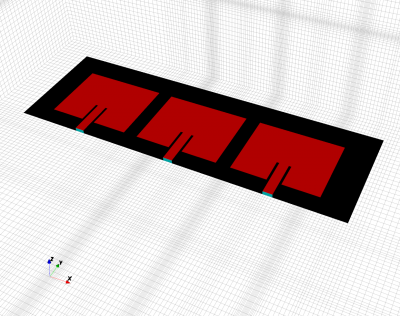
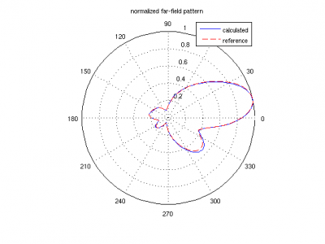
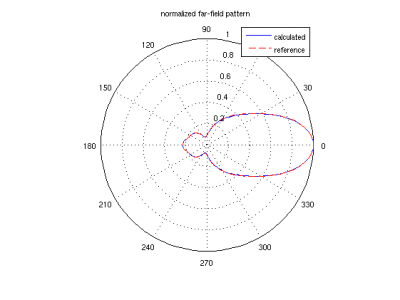
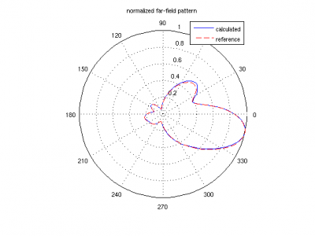

Tutorial: Patch Antenna Phased Array
From openEMS
- Download the latest matlab file using gitweb: Patch_Antenna_Phased_Array.m and Patch_Antenna_Array.m

 Patch antenna phased array model
Patch antenna phased array model
Contents |
Requirements
This tutorial covers
- setup of a Patch Antenna Array [1] (see for comparison: Tutorial: Simple Patch Antenna)
- calculate the full set of S-Parameter
- calculate far-field pattern as a superposition of individual results and attached circuit! [2] [3]
Results
|

|

|

|
Literature
- ↑ Y. Yusuf and X. Gong, “A low-cost patch antenna phased array with analog beam steering using mutual coupling and reactive loading,” IEEE Antennas Wireless Propag. Lett., vol. 7, pp. 81–84, 2008.
- ↑ S. Otto, S. Held, A. Rennings, and K. Solbach, "Array and multiport antenna farfield simulation using EMPIRE, MATLAB and ADS," 39th European Microwave Conf. (EuMC 2009), Sept. 29 - Oct. 1, Rome, Italy, pp. 1547-1550, 2009.
- ↑ K. Karlsson, J. Carlsson, I. Belov, G. Nilsson, and P.-S. Kildal,Optimization of antenna diversity gain by combining full-wave and circuit simulations, in Proc. Second European Conference on Antennas and Propagation EuCAP 2007, 11-16 Nov. 2007, pp. 1-5.

{kind=link}
{kind=link}
{kind=link}
{kind=link}